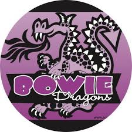
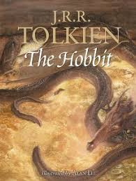

Resume
Projects
Resume
Projects
Howdy guys, my name is Erick Ordonez and this is my website. Now, I probably won't type 500 words, but I will try. If you prefer the summary, go to my timeline, there you can also find some tunes. Ok, let's start. I was born in October to my very hard working parents Luz and Erick. They didn't know english so when elementary school came around I was placed in the bilingual section where I improved my Spanish speaking, writing, and reading skills. In the evenings, my mother would take my brother and I to night school, so we could learn english. With the help of those classes and the eventual placement of me in the english classes, I was able to learn English as well as keep my Spanish, making me bilingual yay! If I could use one word to describe my elementary years, "Reading" would be that word. I lived at the library. Book after book after AR point, and the some more books and some more AR points. In middle school I was introduced to The Hobbit. I fell in love. Tolkien's middle earth was my safe haven. I tried to read the LOTR trilogy, but my sixth grade self was incapable of doing. However, as soon as my reading skills improved I tore through middle earth. And finally, after reading all about this wondeful world, I saw the movies. LOTR trilogy: amazing. My hats off to you Mr.Jackson. The Hobbit Trilogy: still Amazing! Yes, some of the cgi was suspicious in some scenes, but come on, we still were able to see our beloved Bilbo and company on the big screen! Throughout high school I played basketball and guitar. Now, I am part of A&M class of 2024. Yay!
Oct 6,2001
I started out by being born
Age 5-11
Went to Bowie Elementary. I read a lot and got a lot of AR points
Age 12
Read The Hobbit and fell in love with Middle Earth.
Age 15-18
Played Basketball, and started playing guitar
Click here to hear my singing!Junior Year
Scored in the top 2.5% of all hispanic test takers on the PSAT
Present
I am part of TAMU Class of 2024!